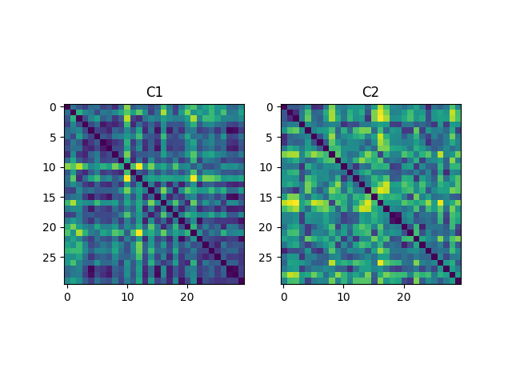

Note
Go to the end to download the full example code.
Gromov-Wasserstein example
Note
Example added in release: 0.8.0.
This example is designed to show how to use the Gromov-Wasserstein distance computation in POT. We first compare 3 solvers to estimate the distance based on Conditional Gradient [24] or Sinkhorn projections [12, 51]. Then we compare 2 stochastic solvers to estimate the distance with a lower numerical cost [33].
[12] Gabriel Peyré, Marco Cuturi, and Justin Solomon (2016), “Gromov-Wasserstein averaging of kernel and distance matrices”. International Conference on Machine Learning (ICML).
[24] Vayer Titouan, Chapel Laetitia, Flamary Rémi, Tavenard Romain and Courty Nicolas “Optimal Transport for structured data with application on graphs” International Conference on Machine Learning (ICML). 2019.
[33] Kerdoncuff T., Emonet R., Marc S. “Sampled Gromov Wasserstein”, Machine Learning Journal (MJL), 2021.
[51] Xu, H., Luo, D., Zha, H., & Carin, L. (2019). “Gromov-wasserstein learning for graph matching and node embedding”. In International Conference on Machine Learning (ICML), 2019.
# Author: Erwan Vautier <erwan.vautier@gmail.com>
# Nicolas Courty <ncourty@irisa.fr>
# Cédric Vincent-Cuaz <cedvincentcuaz@gmail.com>
# Tanguy Kerdoncuff <tanguy.kerdoncuff@laposte.net>
#
# License: MIT License
# sphinx_gallery_thumbnail_number = 1
import scipy as sp
import numpy as np
import matplotlib.pylab as pl
from mpl_toolkits.mplot3d import Axes3D # noqa
import ot
Sample two Gaussian distributions (2D and 3D)
The Gromov-Wasserstein distance allows to compute distances with samples that do not belong to the same metric space. For demonstration purpose, we sample two Gaussian distributions in 2- and 3-dimensional spaces.
n_samples = 30 # nb samples
mu_s = np.array([0, 0])
cov_s = np.array([[1, 0], [0, 1]])
mu_t = np.array([4, 4, 4])
cov_t = np.array([[1, 0, 0], [0, 1, 0], [0, 0, 1]])
np.random.seed(0)
xs = ot.datasets.make_2D_samples_gauss(n_samples, mu_s, cov_s)
P = sp.linalg.sqrtm(cov_t)
xt = np.random.randn(n_samples, 3).dot(P) + mu_t
Plotting the distributions
fig = pl.figure(1)
ax1 = fig.add_subplot(121)
ax1.plot(xs[:, 0], xs[:, 1], "+b", label="Source samples")
ax2 = fig.add_subplot(122, projection="3d")
ax2.scatter(xt[:, 0], xt[:, 1], xt[:, 2], color="r")
pl.show()

Compute distance kernels, normalize them and then display
Compute Gromov-Wasserstein plans and distance
p = ot.unif(n_samples)
q = ot.unif(n_samples)
# Conditional Gradient algorithm
gw0, log0 = ot.gromov.gromov_wasserstein(
C1, C2, p, q, "square_loss", verbose=True, log=True
)
# Proximal Point algorithm with Kullback-Leibler as proximal operator
gw, log = ot.gromov.entropic_gromov_wasserstein(
C1, C2, p, q, "square_loss", epsilon=5e-4, solver="PPA", log=True, verbose=True
)
# Projected Gradient algorithm with entropic regularization
gwe, loge = ot.gromov.entropic_gromov_wasserstein(
C1, C2, p, q, "square_loss", epsilon=5e-4, solver="PGD", log=True, verbose=True
)
print(
"Gromov-Wasserstein distance estimated with Conditional Gradient solver: "
+ str(log0["gw_dist"])
)
print(
"Gromov-Wasserstein distance estimated with Proximal Point solver: "
+ str(log["gw_dist"])
)
print(
"Entropic Gromov-Wasserstein distance estimated with Projected Gradient solver: "
+ str(loge["gw_dist"])
)
# compute OT sparsity level
gw0_sparsity = 100 * (gw0 == 0.0).astype(np.float64).sum() / (n_samples**2)
gw_sparsity = 100 * (gw == 0.0).astype(np.float64).sum() / (n_samples**2)
gwe_sparsity = 100 * (gwe == 0.0).astype(np.float64).sum() / (n_samples**2)
# Methods using Sinkhorn projections tend to produce feasibility errors on the
# marginal constraints
err0 = np.linalg.norm(gw0.sum(1) - p) + np.linalg.norm(gw0.sum(0) - q)
err = np.linalg.norm(gw.sum(1) - p) + np.linalg.norm(gw.sum(0) - q)
erre = np.linalg.norm(gwe.sum(1) - p) + np.linalg.norm(gwe.sum(0) - q)
pl.figure(3, (10, 6))
cmap = "Blues"
fontsize = 12
pl.subplot(131)
pl.imshow(gw0, cmap=cmap)
pl.title(
"(CG algo) GW=%s \n \n OT sparsity=%s \n feasibility error=%s"
% (
np.round(log0["gw_dist"], 4),
str(np.round(gw0_sparsity, 2)) + " %",
np.round(np.round(err0, 4)),
),
fontsize=fontsize,
)
pl.subplot(132)
pl.imshow(gw, cmap=cmap)
pl.title(
"(PP algo) GW=%s \n \n OT sparsity=%s \nfeasibility error=%s"
% (
np.round(log["gw_dist"], 4),
str(np.round(gw_sparsity, 2)) + " %",
np.round(err, 4),
),
fontsize=fontsize,
)
pl.subplot(133)
pl.imshow(gwe, cmap=cmap)
pl.title(
"Entropic GW=%s \n \n OT sparsity=%s \nfeasibility error=%s"
% (
np.round(loge["gw_dist"], 4),
str(np.round(gwe_sparsity, 2)) + " %",
np.round(erre, 4),
),
fontsize=fontsize,
)
pl.tight_layout()
pl.show()
It. |Loss |Relative loss|Absolute loss
------------------------------------------------
0|9.606056e-02|0.000000e+00|0.000000e+00
1|5.330020e-02|8.022552e-01|4.276036e-02
2|5.023674e-02|6.098033e-02|3.063453e-03
3|4.820952e-02|4.205038e-02|2.027228e-03
4|4.501837e-02|7.088545e-02|3.191147e-03
5|4.501837e-02|0.000000e+00|0.000000e+00
/home/circleci/project/ot/bregman/_sinkhorn.py:666: UserWarning: Sinkhorn did not converge. You might want to increase the number of iterations `numItermax` or the regularization parameter `reg`.
warnings.warn(
It. |Err
-------------------
0|8.684324e-02|
/home/circleci/project/ot/backend.py:1206: RuntimeWarning: divide by zero encountered in log
return np.log(a)
10|1.209223e-04|
20|3.076331e-05|
30|1.140465e-04|
40|4.876462e-07|
50|4.040056e-09|
60|3.334506e-11|
It. |Err
-------------------
0|8.684324e-02|
10|5.018997e-05|
20|2.123553e-07|
30|9.184451e-10|
Gromov-Wasserstein distance estimated with Conditional Gradient solver: 0.0450183690192505
Gromov-Wasserstein distance estimated with Proximal Point solver: 0.03761294147832006
Entropic Gromov-Wasserstein distance estimated with Projected Gradient solver: 0.03823623173438275
Compute GW with scalable stochastic methods with any loss function
def loss(x, y):
return np.abs(x - y)
pgw, plog = ot.gromov.pointwise_gromov_wasserstein(
C1, C2, p, q, loss, max_iter=100, log=True
)
sgw, slog = ot.gromov.sampled_gromov_wasserstein(
C1, C2, p, q, loss, epsilon=0.1, max_iter=100, log=True
)
print(
"Pointwise Gromov-Wasserstein distance estimated: " + str(plog["gw_dist_estimated"])
)
print("Variance estimated: " + str(plog["gw_dist_std"]))
print("Sampled Gromov-Wasserstein distance: " + str(slog["gw_dist_estimated"]))
print("Variance estimated: " + str(slog["gw_dist_std"]))
pl.figure(4, (10, 5))
pl.subplot(121)
pl.imshow(pgw.toarray(), cmap=cmap)
pl.title("Pointwise Gromov Wasserstein")
pl.subplot(122)
pl.imshow(sgw, cmap=cmap)
pl.title("Sampled Gromov Wasserstein")
pl.show()

Pointwise Gromov-Wasserstein distance estimated: 0.18551015414186553
Variance estimated: 0.0
Sampled Gromov-Wasserstein distance: 0.14981263716330115
Variance estimated: 0.0013724960658236956
Total running time of the script: (0 minutes 6.458 seconds)